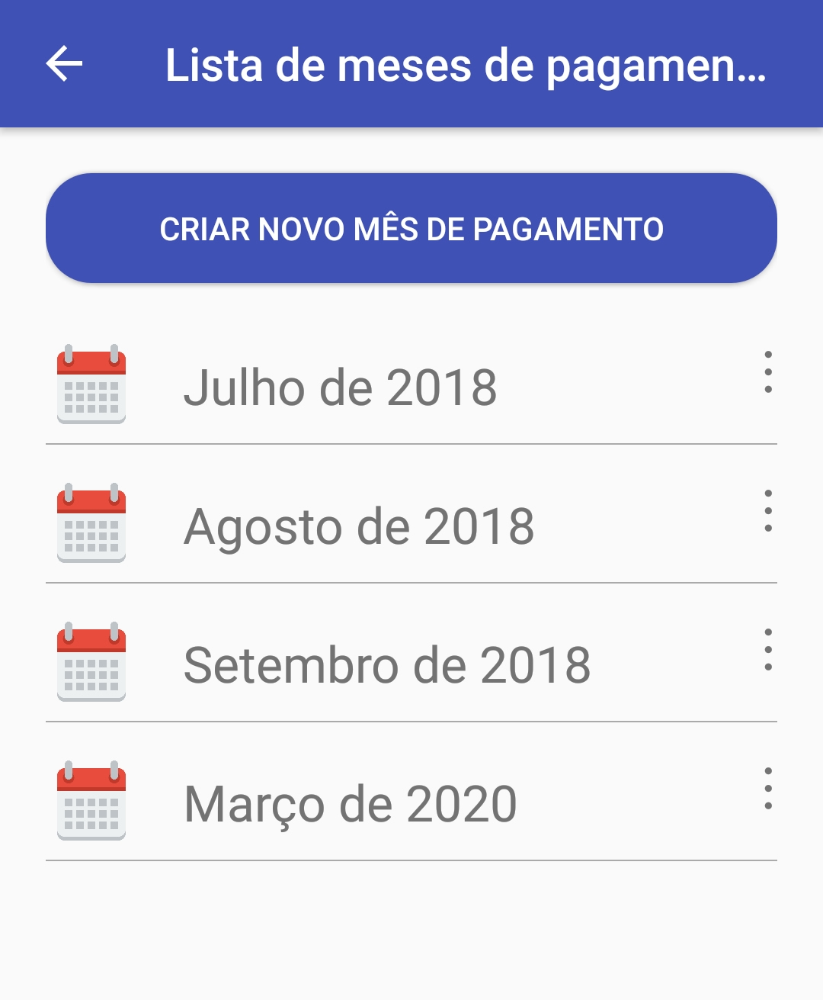
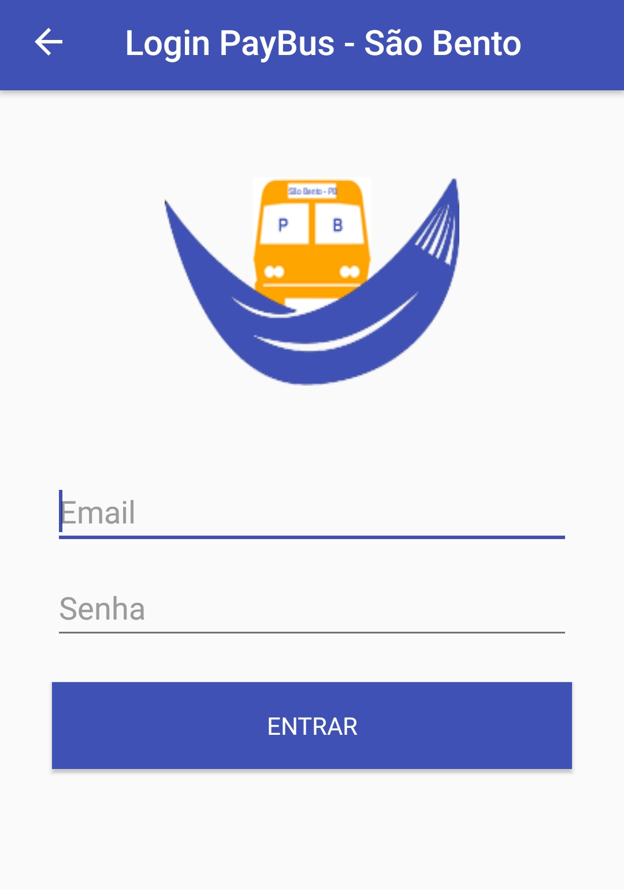
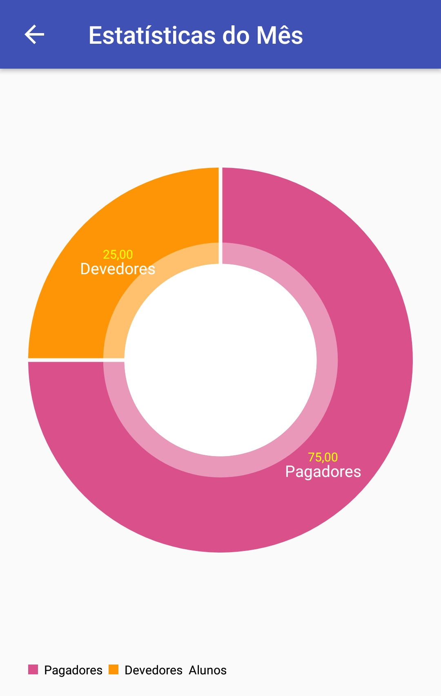

Painel de controle simples e objetivo
Painel de controle com funcionalidades de adicionar novos usuários, realizar pagamentos mensais, ver quanto foi arrecada no mês, e exibir estatísticas gerais.

Criação de novos meses de pagamento conforme o mês ativo de aula nas universidades
Os meses de pagamentos são flexíveis, onde os mesmos são criados conforme o mês que exista aulas, onde é criado uma nova lista de pagamento com todos os alunos ativos no sistema.
Tela de login e Manual de ajuda para dar suporte aos usuários ao manusear o aplicativo de forma correta
Uma tela de login simples, onde o usuário digita seu nome de usuário e senha. O sistema de ajuda é um tutorial completo, mostrado as funcionalidades e a forma correta de controlar o aplicativo dentro do painel de controle.

Nunca foi tão fácil gerenciar o pagamento dos universitários
O pagamento do mês corrente é totalmente gerenciável, o usuário pode adicionar novos alunos ao mês corrente, pode listar os universitários que realizam o pagamento, mostrar os universitários que ainda não realizaram o pagamento, exibir todos os universitários, como também gerar gráficos e fazer comparações com meses anteriores.

Geração de gráficos mensais
O painel conta com um moderno e elegante gerador de gráficos mensais, onde será possível identificar mensalmente, quantos universitários pagaram e quantos ainda estão inadimplentes.
Tecnologias utilizadas
Para o desenvimento deste aplicativo foram utilizadas as seguintes tecnologias: JAVA, XML para manipular toda a parte visual do aplicativo e o banco de dados SQlite. A IDE de desenvolvimento utilizada foi o Android Stúdio, utilizando o GenyMotion para fazer a virtualização do dispositivo.
JAVA
XML
SQLITE